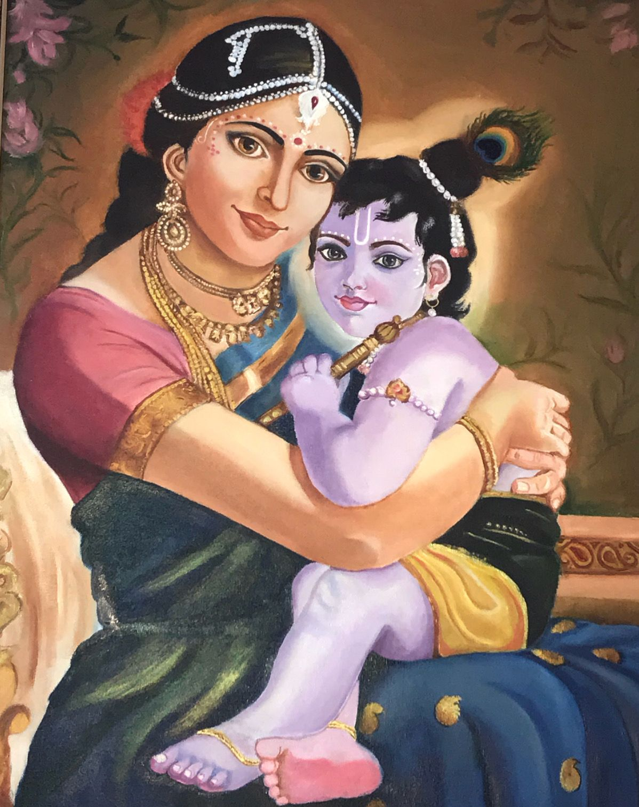
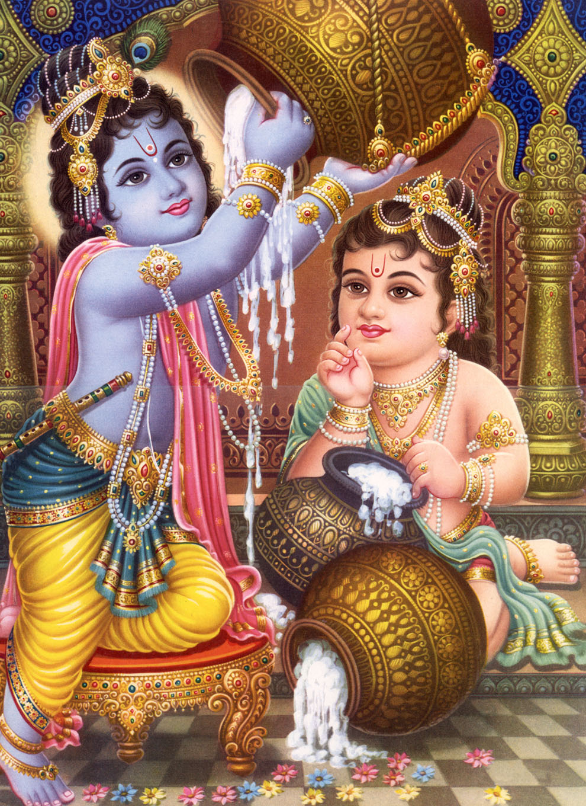
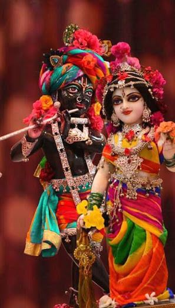

In the Krishna Charitas, Krishna is born to Devaki and her husband, Vasudeva, of the Yadava clan in Mathura.[110] Devaki's brother is a tyrant named Kamsa. At Devaki's wedding, according to Puranic legends, Kamsa is told by fortune tellers that a child of Devaki would kill him. Sometimes, it is depicted as an akashvani announcing Kamsa's death. Kamsa arranges to kill all of Devaki's children. When Krishna is born, Vasudeva secretly carries the infant Krishna away across the Yamuna, and exchanges him with Yashoda's daughter. When Kamsa tries to kill the newborn, the exchanged baby appears as the Hindu goddess Yogamaya, warning him that his death has arrived in his kingdom, and then disappears, according to the legends in the Puranas. Krishna grows up with Nanda and his wife, Yashoda, near modern-day Mathura. Two of Krishna's siblings also survive, namely Balarama and Subhadra, according to these legends. The day of the birth of Krishna is celebrated as Krishna Janmashtami.
The legends of Krishna's childhood and youth describe him as a cow-herder, a mischievous boy whose pranks earn him the nickname Makhan Chor (butter thief), and a protector who steals the hearts of the people in both Gokul and Vrindavana. The texts state, for example, that Krishna lifts the Govardhana hill to protect the inhabitants of Vrindavana from devastating rains and floods.Other legends describe him as an enchanter and playful lover of the gopis (milkmaids) of Vrindavana, especially Radha. These metaphor-filled love stories are known as the Rasa lila and were romanticized in the poetry of Jayadeva, author of the Gita Govinda. They are also central to the development of the Krishna bhakti traditions worshiping Radha Krishna.Krishna's childhood illustrates the Hindu concept of Lila, playing for fun and enjoyment and not for sport or gain. His interaction with the gopis at the rasa dance or Rasa-lila is an example. Krishna plays his flute and the gopis come immediately, from whatever they were doing, to the banks of the Yamuna River and join him in singing and dancing. Even those who could not physically be there join him through meditation. He is the spiritual essence and the love-eternal in existence, the gopis metaphorically represent the prakṛti matter and the impermanent.
This Lila is a constant theme in the legends of Krishna's childhood and youth. Even when he is battling with a serpent to protect others, he is described in Hindu texts as if he were playing a game. This quality of playfulness in Krishna is celebrated during festivals as Rasa-Lila and Janmashtami, where Hindus in some regions such as Maharashtra playfully mimic his legends, such as by making human gymnastic pyramids to break open handis (clay pots) hung high in the air to "steal" butter or buttermilk, spilling it all over the group
Krishna legends then describe his return to Mathura. He overthrows and kills the tyrant king, his maternal uncle Kamsa/Kansa after quelling several assassination attempts by Kamsa. He reinstates Kamsa's father, Ugrasena, as the king of the Yadavas and becomes a leading prince at the court. In one version of the Krishna story, as narrated by Shanta Rao, Krishna after Kamsa's death leads the Yadavas to the newly built city of Dwaraka. Thereafter Pandavas rise. Krishna befriends Arjuna and the other Pandava princes of the Kuru kingdom. Krishna plays a key role in the Mahabharata.
The Bhagavata Purana describes eight wives of Krishna that appear in sequence as Rukmini, Satyabhama, Jambavati, Kalindi, Mitravinda, Nagnajiti (also called Satya), Bhadra and Lakshmana (also called Madra). This has been interpreted as a metaphor where each of the eight wives signifies a different aspect of him. Vaishnava texts mention all Gopis as wives of Krishna, but this is understood as spiritual symbolism of devotional relationship and Krishna's complete loving devotion to each and everyone devoted to him.
In Krishna-related Hindu traditions, he is most commonly seen with Radha. All of his wives and his lover Radha are considered in the Hindu tradition to be the avatars of the goddess Lakshmi, the consort of Vishnu. Gopis are considered as Lakshmi's or Radha's manifestations.
click hera